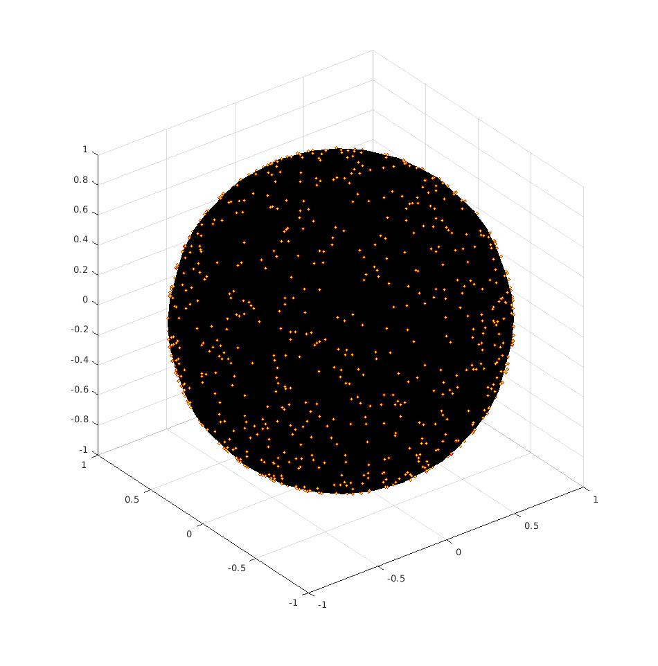
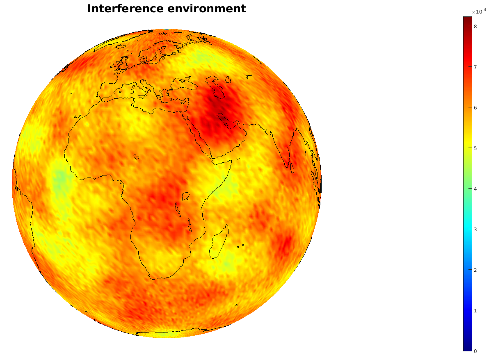

Poisson process can be generalized to arbitrary manifold of course. Next I will present the Poisson point process on a sphere.

Are stars Poisson distributed on the night sky?
We can exploit the Poisson process to characterize interference from terrestrial transmitters in a satellite.

Well, there should not be hotspots in the sea